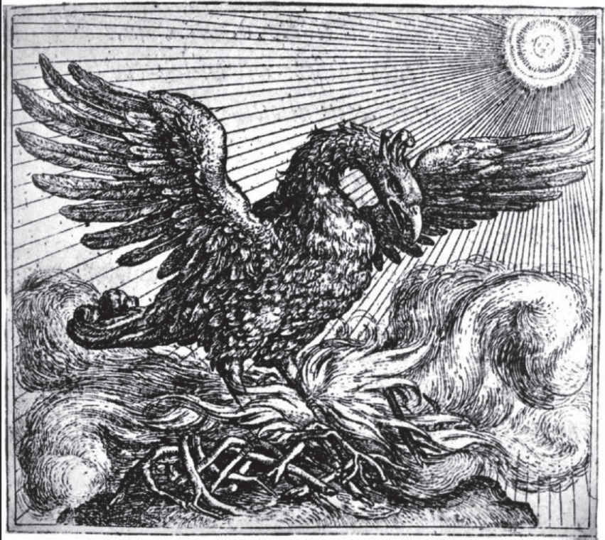

'Let the Bird of Loudest Lay' 1
LET the bird of loudest lay 2 3
On the sole Arabian tree
Herald sad and trumpet 4 be,
To whose sound chaste wings obey.
But thou shrieking harbinger 5 ,
Foul precurrer 6 of the fiend 7 ,
Augur 8 of the fever's end,
To this troop come thou not near.
From this session 9 interdict 10
Every fowl of tyrant wing 11 ,
Save 12 the eagle, feathered king:
Keep the obsequy 13 so strict 14 .
Let the priest in surplice 15 white,
That defunctive 16 music can 17 ,
Be the death-divining 18 swan,
Lest the requiem lack his right 19 .
And thou treble-dated 20 crow,
That thy sable gender 21 mak'st
With the breath thou giv'st and tak'st,
'Mongst our mourners shalt thou go.
Here the anthem 22 doth commence:
Love and constancy is dead;
Phoenix 23 and the turtle 24 fled 25
In a mutual flame 26 from hence.
So they loved, as 27 love in twain 28
Had the essence but in one 29 ,
Two distincts 30 , division none:
Number 31 there in love was slain.
Hearts remote 32 , yet not asunder 33 ;
Distance 34 and no space was seen
'Twixt this turtle and his queen:
But in them it were a wonder 35 .
So between them love did shine
That the turtle saw his right 36
Flaming in the phoenix' sight 37 :
Either was the other's mine 38 .
Property 39 was thus appalled
That the self was not the same 40 :
Single nature's double name
Neither two nor one was called 41 .
Reason, in itself confounded 42 ,
Saw division grow together 43 ,
To themselves yet either neither 44 ,
Simple 45 were so well compounded 46 ,
That it 47 cried, 'How true 48 a twain
Seemeth this concordant 49 one!
Love hath reason, reason none,
If what parts can so remain 50 .'
Whereupon it made this threne 51
To the phoenix and the dove,
Co-supremes 52 and stars of love,
As chorus to their tragic scene.
THRENOS 53
Beauty, truth and rarity,
Grace in all simplicity,
Here enclosed in cinders lie.
Death is now the phoenix' nest,
And the turtle's loyal breast
To eternity doth rest,
Leaving no posterity 54 .
'Twas not their infirmity 55 ,
It was married chastity.
Truth may seem but cannot be 56 ,
Beauty brag but 'tis not she,
Truth and beauty buried be.
To this urn let those repair 57
That are either true or fair,
For these dead birds sigh a prayer.
William Shake-speare

The Phoenix: mythical bird that is the only one of its kind, perpetually regenerating itself from its own ashes, sometimes serving in the period as an image of Queen Elizabeth, but perhaps also suggesting the regenerative power of poetic art.
Textual Notes
VENUS AND ADONIS
Q = First Quarto text of 1593
Q2 = a correction introduced in the Second Quarto text of 1594
Ed = a correction introduced by a later editor
185 Souring = Q ( So wring) 193 shines but = Q corrected by hand in unique copy to shineth but 198 earthly = Q corrected by hand in unique copy to this earthly 231 deer spelled deare in Q 325 chafing = Q. Ed = chasing 466 love = Q. Ed = loss 654 air = Q. Ed = earth 748 th'impartial = Q2. Q = the th'impartiall 754 sons = Q2. Q = suns 832 deeply = Q. Ed = doubly 873 twined = Q ( twin'd) . Ed = twine 962 the = Q. Ed = her 1031 are = Q. Ed = as 1054 had = Q. Ed = was 1095 sung = Ed. Q = song 1113 did = Q. Q2 = would
THE RAPE OF LUCRECE
Q = First Quarto text of 1594
Q (uncorrected) = uncorrected version of this edition
Q (corrected) = corrected version of this edition
Q2 = a correction introduced in the Second Quarto text of 1598
Ed = a correction introduced by a later editor
THE RAPE OF LUCRECE = Q (poem header and running header, but just LUCRECE on title page) 21 peer = Q. Q2 = prince 24 morning's = Q (corrected) . Q (uncorrected) = morning 31 apology = Q (uncorrected) . Q (corrected) = Apologies 48 repentant = Q. Ed = repentance 50 Collatium = Q (uncorrected) . Q (corrected) = Colatia 77 in = Q. Ed = o'er 125 themselves betake = Q (corrected) . Q (uncorrected) = himself betakes 126 wake = Q (corrected) . Q (uncorrected) = wakes 425 Slaked spelled Slakt in Q. Ed = Slacked 550 blows = Ed. Q = blow 684 prone = Q. Ed = proud/foul 755 in = Q. Ed. = e'en 782 musty = Q. Ed = misty 812 quote spelled cote in Q 950 cherish = Q. Ed = perish/blemish 1037 betumbled spelled betombled in Q 1310 tenor spelled tenure in Q 1316 stained her stained = Q. Ed = stained her strain'd/stained her stain's 1452 chaps spelled chops in Q 1652 robbed spelled rob'd in Q 1680 on = Q. Ed = one/in 1712 The = Q. Ed = Her 1713 in it = Ed. Q = it in 1822 wounds help = Q. Ed = wounds heal
To the Queen
Stanford = a reading in the original manuscript of 'To the Queen' (commonplace book of Henry Stanford, Cambridge University Library MS Dd.5.75, fol. 46)
Ed = a modern editorial reading
To the Queen = Stanford ('to the Q. by the players 1598'); date is old style calendar 16 fathers' = Ed. Stanford = father
' Let the Bird of Loudest Lay '
The 1601 Quarto printing in Robert Chester's collection, Love's Martyr , contains no disputed readings
NOTES
1 'Let ... Lay' untitled when originally published, this poem has been known since the early 1800s as 'The Phoenix and Turtle'
2 bird … lay never positively identified within the poem; the following line suggests that it might refer to the mythological Arabian phoenix
3 lay song
4 trumpet trumpeter
5 shrieking harbinger often identified as the screech owl, regarded as a bird of ill omen whose cry heralded death
6 precurrer precursor
7 fiend devil
8 Augur predictor (literally soothsayer who made predictions based on the behaviour of birds)
9 session sitting (of court or parliament)
10 interdict prohibit
11 fowl … wing bird of prey/usurper, despot
12 Save except
13 obsequy funeral rites
14 strict restricted, exclusive/rigorously maintained
15 surplice ecclesiastical garment (here, the swan's white feathers)
16 defunctive deathly, funereal
17 can knows
18 death-divining the swan was thought to know that its own death was coming, at which point it would sing
19 his right what is due (either to the swan or to the requiem; puns on 'rite')
20 treble-dated living three times the normal span
21 sable gender black offspring; the crow was thought to reproduce chastely through the touching of beaks and exchange of breath
22 anthem piece of music or song of praise
23 Phoenix mythological Arabian bird which lived for five hundred years, was consumed by fire and then reborn from the ashes; only one existed at a time
24 turtle turtle-dove, a bird renowned for love and constancy
25 fled have departed this life
26 In … flame together in one flame
27 So … as they so loved that
28 twain two
29 essence … one essential irreducible quality of one thing
30 distincts separate things
31 Number the concept of plurality
32 remote apart
33 asunder separated
34 Distance distance and proximity was seen
35 But … wonder in anyone other than them it would have been extraordinary
36 right due, what belonged to him
37 sight eyes, gaze
38 Either … mine they belonged to each other/each was the source of the other's wealth
39 Property ownership/self-possession
40 the same itself
41 Single … called i.e. their nature was both separate and united, so it could not properly be called either one or two
42 confounded confused/overthrown
43 division grow together separateness resolve into one
44 To … neither i.e. each one was nothing without the other
45 Simple a single unmixed substance
46 compounded combined
47 it i.e. Reason
48 true truly/faithful
49 concordant harmonious
50 what … remain separate elements remain so united
51 threne threnody, song of lamentation for the dead
52 Co-supremes joint rulers
53 THRENOS threnody, funeral lament
54 posterity offspring
55 infirmity physical inability
56 Truth … be i.e. since both truth and beauty are buried with the phoenix and the turtle, whatever appears like them cannot really be so
57 repair make their way